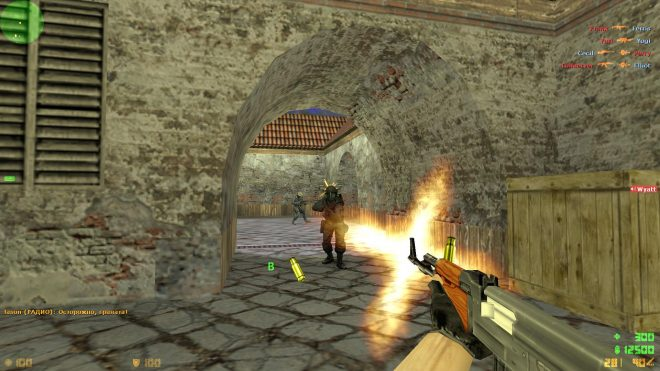
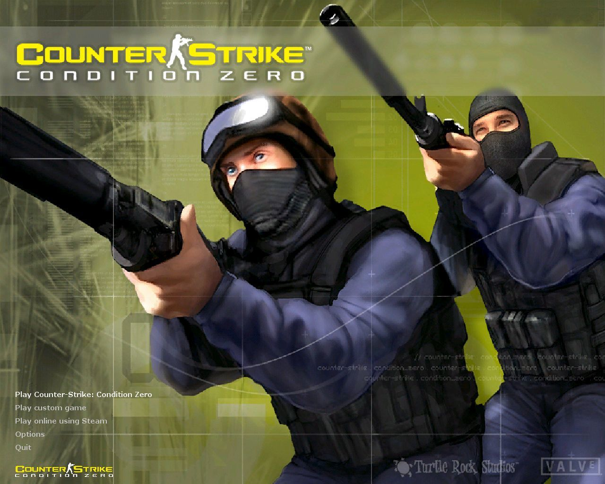
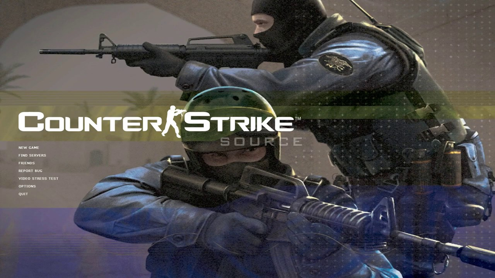
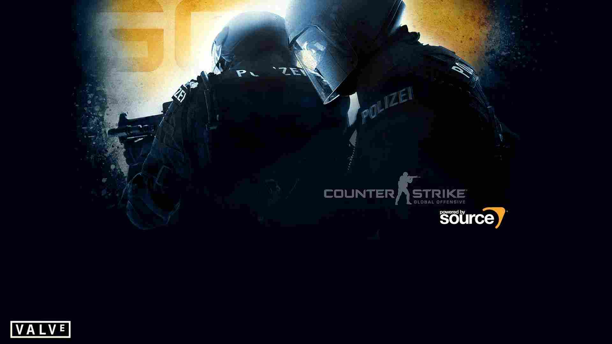

Серія ігор Counter-Strike – Король онлайн-шутерів
Легендарної серії онлайн-шутерів Counter Strike вже більше 20 років, і на честь цього ми вирішили розглянути історію франшизи та розібратися, що допомогло їй піднятися на вершину жанру командних шутерів, чим відрізняються одна від одної різні її частини і що чекає на «Контру» в майбутньому.
Історія ігор серії Counter Strike почалася в далекому 1999 році, коли мододелі Мін Лі та Джесс Кліфф випустили мультиплеєрний мод для шутера Half-Life, присвячений протистоянню загону спецназу та угрупованню терористів. Приблизно в той же час вийшли дві інші популярні ігри в тому самому сеттингу – Tom Clancy's Rainbow Six та SWAT 3: Close Quarters Battle. Та й тема міжнародного тероризму в ті роки не сходила з екранів телевізорів, тож інтерес до ігор про боротьбу з терором був дуже високим.
При цьому на відміну від Rainbow Six та SWAT 3, де основним режимом була синглова кампанія, Counter Strike був чисто мультиплеєрним. І якщо Rainbow Six і SWAT були насамперед тактичними шутерами і використання різних спецзасобів на кшталт світло-шумових гранат було основою геймплею, то CS на першому місці були бадьорі і динамічні перестрілки, а гранати грали допоміжну роль.
Більшість інших популярних в ті роки онлайн-шутерів на кшталт Quake III Arena або Unreal Tournament пропонували користувачам лише режим командного дезматчу в сеттингу, що втрачав популярність Sci-Fi. А ось у CS злободенний сеттинг поєднувався з унікальними ігровими режимами, серед яких були порятунок/утримання заручників, встановлення/знешкодження бомби. Мод швидко завоював величезну популярність та привернув увагу правовласників HL, компанії Valve. Студія швидко зорієнтувалася та викупила права на CS, заодно найнявши Міна та Джесса для роботи над stand-alone грою.
Counter-Strike (2000)
На переробку фанатського мода знадобилося менше року, і вже в 2000 вийшла перша гра серії Counter-Strike. У ній збережено базовий геймплей моди, а саме командні бої спецназу проти терористів в одному з трьох режимів. Бої складаються з кількох раундів, після кожного з яких обидві команди одержують певну суму грошей (переможці більше, що програли менше).
На ці гроші на початку наступного раунду кожен гравець набуває більш досконалої зброї. Зброя розміщувалася в 4 слотах - основна гармата (зазвичай штурмова гвинтівка або пістолет-кулемет), допоміжна зброя (пістолет), ніж, гранати (в цей слот можна поміщаються по кілька осколкових, димових та світло-шумових гранат). Також з'явилася можливість купити бронежилет, що знижував всю шкоду, що надходила, і шолом, який іноді рятував від хедшотів.
Counter-Strike (2000) Trailer
Основна зброя ділиться на автомати, які були хороші на середній дистанції, дробовики та пістолети-кулемети, забійні поблизу, але марні на дистанції, снайперські рушниці для кемперів та кулемети для любителів поливати ворога градом свинцю через стіни та двері.
Збройові гіки могли порадіти наявності моделей реальної зброї – від пістолетів Glock-18 та Desert Eagle до автоматів АК-47 та M4A1.
"Контра" швидко стала надпопулярною як у світі. У ранні двотисячні в неї рубалися скрізь – в ігрових залах, будинки з друзями через інтернет, у шкільних та університетських інформаційних класах і навіть в офісах . Завдяки ідеально відточеному балансу CS швидко став кіберспортивною дисципліною . Останній офіційний апдейт CS 1.6 вийшов у 2003 році .
Counter-Strike: Condition Zero (2004)
Розробка сіквела почалася ще 2000 року відразу після виходу оригіналу. Спочатку реліз планувався ще на 2002 рік , але через зайнятість Valve роботою над двигуном Source і сиквелом Team Fortress розробкою проекту займалася спочатку Rogue Entertainment, потім Gearbox Software і Ritual Entertainment. Такий «клаптичний» принцип роботи не міг не позначитися на якості гри – її графіка виглядала застарілою за мірками 2004 року .
Counter-Strike: Condition Zero (2004) Trailer
Основною відмінністю сиквела стала поява синглової кампанії, в якій геймери мали будувати кар'єру в загоні спецназу. Мультиплеєрний режим змінився зовсім незначно - додалися кілька нових карт і видів зброї.
І критики, і прості геймери прохолодно поставилися до виходу сиквела – його середня оцінка становила лише 7 балів із 10. До того ж більшості гравців було просто ніколи проходити сюжетну кампанію, тому що в тому ж році відбувся реліз наступної частини серії CS.
Counter-Strike: Source (2004)
Закінчивши роботу над Source, студія Valve вирішила перенести на нього всі свої проекти, включаючи Counter-Strike. За основу було взято версію CS 1.6, звідки в гру перекочував як базовий геймплей, так і більшість контенту. У результаті CS: Source відрізнялася від CS 1.6 тільки набагато красивішою графікою , наявністю щита у контр-терористів та парочкою нових карт.
Counter-Strike: Source (2004) Trailer
Геймери сприйняли цю частину серії як повернення до витоків, і на довгі роки саме Source став найпопулярнішою частиною франшизи. Саме по ньому стали проводитися всі найбільші кіберспортивні турніри, тоді як Condition Zero виявилася забутою як прикрі непорозуміння.
Середня оцінка гри у більшості ігрових видань склала близько 9 із 10. Гра регулярно оновлювалася як зусиллями Valve, так і модоробами. У 2010 році ігровий двигун був оновлений до версії Source 2. Проте вже в 2011 році було анонсовано вихід нової частини серії.
Counter-Strike: Global Offensive (2012)
Студія зробила висновки з історії з Condition Zero, тому нова частина була чисто мультиплеєрною. Базовий геймплей знову не змінився, і всі відмінності GO від CS 1.6 зводяться до нового набору карток, набагато красивішої графіки, набагато більшого вибору зброї (асортимент збільшився чи не в 2 рази) та появи нових видів гранат – «обманки», яка виробляє звук пострілу та дезорієнтує ворогів, і коктейлю Молотова, який тимчасово підпалює ділянку карти.
У 2013 році у грі з'явилася механіка, яка на довгі роки визначила її розвиток, а саме скіни для зброї. Тепер на нагороду за успішні бої можна отримати лутбокси , з яких з ймовірністю випадають різні скіни, які можна застосовувати самостійно або продавати іншим геймерам (іноді і за реальну валюту, хоча Valve з цим бореться). За бажання ці ж лутбокси можна купити у преміум-магазині.
Counter-Strike: Global Offensive (2012) Trailer
CS:GO впритул підійшов до формату ММО – у грі навіть періодично проводяться різноманітні акції. Студія регулярно оновлює проект, додаючи до нього нові скіни, зброю, карти та навіть режими (так, у 2018 році у грі з'явився модний режим королівської битви ).
У грудні 2018 року проект повністю перейшов на модель free-to-play , і в даний час CS: GO вдалося повністю витіснити попередні частини франшизи з кіберспортивної сцени.
Counter-Strike 2 (2023)
У вересні 2023 року Valve представила Counter-Strike 2 – еволюцію серії, здатну замінити популярну, але все ж таки вже немолоду CS:GO; причому замінити безкоштовно, ставши масштабним оновленням для гри. Продовження серії створено на движку Source 2, і розробники називають його "найбільшим технологічним стрибком в історії Counter-Strike".
В першу чергу, Counter-Strike 2 покращала візуально. Нова версія движка дозволила авторам покращити освітлення, створити реалістичні текстури та відображення. При цьому, хоч класичні карти і зазнали численних змін – зокрема щодо читання об'єктів – їх структура та особливості залишилися колишніми, тому гравцям не доведеться заново звикати до них.
Counter-Strike 2: Leveling Up The World
Одним із ключових нововведень сиквела стала поведінка диму, який тепер підпорядковується законам фізики , природно заповнює простір, проникає у відчинені двері та вікна, дозволяючи використовувати нові тактичні прийоми. Наприклад, постріли та вибухи розганяють дим, і, стріляючи прямо через димову завісу, гравець видаватиме своє місце розташування. З іншого боку, поставлену димову завісу можна прибрати кидком уламкової гранати.
Counter-Strike 2: Responsive Smokes
Ще одна помітна зміна – відмова від класичного тикрейту. Тепер сервери моментально відстежують кожну дію гравців та синхронізують результати всіх учасників. Це означає, що кожен гравець бачитиме те, що бачать інші, без будь-яких лагів і затримок.
Counter-Strike 2: Moving Beyond Tick Rate
Цим список нововведень не обмежується, і Counter-Strike 2 дійсно виглядає як нова гра, хоч і заміняє клієнт Counter-Strike: Global Offensive. Фанатам серії, які награли сотні тисяч матчів, не варто турбуватися про свої досягнення: всі скіни та інший контент переходить у CS 2 без змін, а «шкурки» для зброї стають ще кращими, з оновленими моделями високої якості.
Висновок
Ігри серії Counter-Strike швидко здобули популярність завдяки збалансованому динамічному геймплею, реалістичному та актуальному сеттингу та оригінальним ігровим режимам. За більш ніж 20 років свого існування франшиза не лише здобула титул короля онлайн-шутерів, а й успішно захищає його у протистоянні з конкурентами.
Багато в чому Valve вдається зберігати популярність гри за рахунок принципу «не ламай те, що працює» – всі сиквели та оновлення додають у CS свіжий контент та режими, але практично не торкаються базового геймплею.